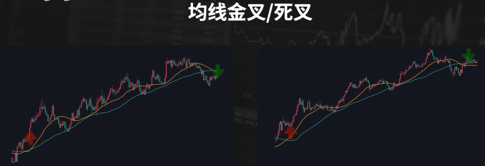

均线拓展
分析市场
- 均线是属于趋势指标，更多的是应用在趋势行情的判定上，当行情展开一段趋势的时候，能够通过均线很直观的观察出来。在均线的使用上，一般会有单根均线，双均线以及均线组合的用法。
- 单根均线一般运用的是短周期均线或者中周期均线。观察的就是价格和均线的位置关系。主要用来提供买卖点。大家比较熟悉的是葛南维八大法则，四大买点四大卖点。比如价格上穿均线形成的黄金交叉，价格在均线的上方，在均线附近受到支撑形成的回测不破，价格在均线上方小幅度下破均线又迅速收盘至均线上方形成的小幅突破，以及价格距离均线过远形成的怪力过大，这些都是一些买卖点的相应规则。
- 双根均线一般运用的是短周期均线以及中周期均线，双均线也是主要用来提供买卖的信号，看的是短周期的均线上穿长周期均线形成的金叉，以及短周期均线下穿长周期均线形成的死叉。一般来说是把金叉作为买入的信号，死叉作为卖出的信号。
- 多根均线的均线组合一般运用有一定数值跨度的短周期均线到长周期均线，主要是通过均线的多头排列，空头排列来描述趋势的行情。当行情在一段时间内是连续的上涨走势时，短周期到长周期的均线表现为斜率向上，由于短周期均线更加贴近价格走势，就形成了均线的多头排列。
- 上面讲了均线的一般用法，不过都没有讲到具体的参数。很多人可能会问到，用哪一个周期的均线或者说哪几条均线的组合，能够非常有效的去描述市场走势，提供很好的交易信号呢？讲到这里我们需要再回过头来思考下价格走势和均线的关系，比如以上的两段价格走势，
是不同的品种不同周期的两段整理走势，我们添加一条120周期的均线，我们可以看到，价格都是在上下的乱穿均线。
再看下图:
同样是两段不同品种不同周期的上涨的走势，两段类似的上涨走势，我们添加60周期的均线，是不是价格一直是在均线的上方，并且均线的斜率也是向上的?
再看下图:
上面一段走势是1小时级别的K线图，用60周期的均线可以得到价格和均线的位置关系，如图所示。我们把K线图的周期切换到30分钟，用120周期的均线，是不是也可以得到相同价格和均线的位置关系？价格上穿均线的位置关系，下穿均线的位置都是一致的。
两段类似的上涨的走势，如下图:

我们添加30周期和60周期两根均线的组合，虽然两段行情是在不同品种不同的周期，但是行情的走势是类似的。均线组合的状态也是类似的。我们用均线组合的金叉作为入场信号，死叉作为出场的信号，我们标注出这样的走势下，入场和出场的位置，是不是都能够通过金叉和死叉的信号，拿到其中的一段利润。
如下图:
我们再用参数为30 60 120 的3根均线作为一个均线的组合，只要价格的走势是出现了一段时间的连续上涨，或者短时间内出现了大幅度的上涨，均线的组合都会呈现多头排列的状态。

通过以上几个例子，我们可以看的出来，均线跟什么样的市场，什么样的周期都没有关系，而是跟价格走势有直接的关系，忽略标的和周期，一定的价格走势添加一定参数的均线，就会呈现一定的价格和均线的关系，是价格的走势决定了均线的状态，一定斜率的连续的上涨走势，添加合适的均线，都可以使得均线的斜率向上，并且得到相应的价格和均线的位置关系。同样的一段走势，在一个周期添加一条均线，在其他的周期，我们可以通过调整均线的参数获得相同的均线和价格的位置关系。一段时间的连续上涨，或者短时间出现大幅度的上涨，就会使得均线组合呈现多头排列的状态，只不过更大周期的均线组合，需要更长时间的连续上涨，或者短时间内更大幅度的上涨，才会呈现多头排列。在我们使用均线来去判断趋势，或者作为入场出场信号的时候，我们要清楚，均线的状态给到我们的信息背后都有相对应的价格的走势，当我们把均线添加到盘面上，利用均线作为我们去分析行情的工具的时候，我们到底用的是什么呢？我添加一条60周期的均线，
那如果是调整幅度比较大的上涨的走势，价格上涨之后的调整，就会在均线有小幅突破，如果是斜率更大一些的连续的上涨，价格就会比较贴合60周期的均线，如果是斜率更大的调整幅度更小的连续上涨，那价格就会一直在均线的上方，没有到达均线就继续上涨，所以用一个固定周期的均线去描述一段趋势的行情，均线跟价格的位置关系，跟这段趋势行情的上涨斜率连续性调整的幅度是有关系的。我们通过单根均线，观察的就是价格涨跌的节奏，以及节奏的变化。
如下图:
如果我们添加一组短周期到长周期的均线组合，用均线组合的多头排列，来判断行情的趋势，我们通过前面的理解知道，行情出现了一段时间的连续上涨，或者短时间内出现大幅度的上涨，就会出现均线的多头排列，我们使用均线的多头排列，来判断行情是多头的趋势，理解到这一点后，我们是不是可以直接的去观察价格的走势，是不是连续的上涨，或者是不是在短时间内出现了大幅度的上涨，来判断现在的趋势。均线都是根据价格经过固定的公式计算得到的，行情的走势跟均线的指标是有确定性关系的，这是均线的特性。不过如果从获取市场信息的角度来看，均线还有其它的技术指标就都是滞后的，通过均线等指标，去获取市场信息的时候，每一种均线的状态，都会有相对应的价格的走势，理解了这层关系，哪怕没有添加均线的指标在盘面当中，我们也可以直接的去观察价格的走势，同样可以获取你需要的信息，只不过直接的从价格走势当中去获取这些信息，需要你有更多的市场的经验，对市场有更深的理解，所以说均线也有它自身的优势，能够通过一些简单的规则，就可以快速的获取市场当中的一些信息，不过在使用均线这样的指标的时候，一定要清楚它的定位，均线是一个很简单，直观，客观的辅助我们去判断行情的工具，技术指标从来都不是什么制胜法宝，而是我们明确自己的目的和需求之后用来提高效率的工具。
构建策略
- 均线这样的技术指标跟价格的走势是有确定性的关系的，因为有固定的公式，同样的标的，同样的周期，同样的行情，用同样均线的参数，就能够计算得到客观的数值，有了具体的数值，就更加方便去调用也更加容易形成有具体规则的条件，所以均线这样的基础指标在构建交易策略尤其是量化策略当中应用是非常广泛的。我们能够接触到很多均线的策略和战法，虽然不同的策略规则和条件都不同，对于均线的用法也不一样，不过研究的方向大致上是类似的，都是在研究均线的组合和参数，想要找到合适参数的均线，或者均线的组合，来判断趋势或者提供入场出场的信号。
- 我们看下下面的两段行情走势

使用两组不同的均线组合，一条均线是30周期和60周期的两条简单移动平均线，另一组选用60周期和120周期的两根均线，我们就用最常见也最简单的规则去指定一个策略，非常简单的规则，出现均线组合的金叉信号去做多，出现死叉的信号平仓出场，我们按照入场的信号和出场的信号，把入场位置和出场的位置都在图中标注出来。
观察不同参数均线组合给到的位置，我们可以看到，同样的入场和出场规则，参数更大的均线组合，入场和出场的位置都会滞后一些，同样的稳定性更高一些，如果是一小段的连续上涨，后面的行情就发生了反转，那参数更小的均线策略，就可以获得盈利，而参数更大的均线策略入场也滞后出场也滞后，盈利的空间就很小，如果是调整幅度较大的大段的连续上涨，参数小的均线组合会出现更多的入场信号和出场信号，而参数更大的均线策略则可以过滤掉中间的一些波动，拿到一大段的利润。非常简单的规则都可以在趋势的行情中拿到利润，不同参数的策略也都有自己更适合的行情，在适合的行情下都可以拿到相应的属于规则内的利润。那什么样的参数是更好的参数？什么样的策略是更好的策略？其实这个不取决于均线的参数或着组合而是却决于你交易的标的和当下的行情。如果这个标的在某一个周期经常会走趋势的行情，在趋势的行情当中，你用各种均线的趋势策略都更容易盈利，只不过用不同的规则会拿到不同的利润，如果这个标的经常出现，这种小段的连续上涨那参数更小的均线策略就更加适合，如果这个标的经常出现的是有一定调整幅度的大段的连续的上涨,那用参数更大的均线策略更加适合，同样是非常简单的用均线的金叉和死叉作为入场和出场信号的双均线的策略，其实各自都有自己适合的行情，可以拿到规则内的利润，所以我们用这样的策略规则去交易的时候，能不能够盈利，决定策略盈亏的核心要素是什么？其实取决于你交易的标的出现这样的走势的概率有多大，出现入场信号的频率有多高，出现入场信号之后的成功率有多少。如果经常出现这样的走势，那这样的策略就更容易盈利，如果不经常出现这样的连续上涨的走势那用趋势的策略就不容易盈利。用均线或者其它技术指标构建的策略都会有自己适合的行情，可以拿到对于的利润，但是一个标的是否经常出现这样的行情才决定了这个策略能不能盈利。所以用均线或者其它技术指标构建策略的时候你研究的精力其实还是要回到市场当中去，回到交易的标的，回到行情的走势上去深入的研究一个标的去做统计去找规律，看这个标的有什么样的特性，经常出现什么样的走势，然后通过技术指标，用具体的规则，用什么样的条件参数，作为入场和出场信号，能够在经常的出现的这种走势当中拿到利润，从而构建出交易策略。最后总结一下，在使用技术指标去分析市场去构建策略有不同的研究方向，有的人把精力放在了指标的参数和指标的组合，想要总结出什么样的组合和参数去分析和交易各个市场和品种。我个人认为，指标构建出来的交易策略都是有适合的行情，在适合的行情当中都能够拿到利润，合适的行情在一个标的上出现的概率，频率，成功率，才决定了策略最终的盈亏。想要用指标构建的策略实现盈利要研究的重点应该在于你交易的标的，深入的研究一个标的，了解这个标的的特性，了解这个标的在什么样的情况下经常出现什么样的走势，然后才是用什么指标，用什么参数，能够在这样的走势当中拿到利润，从而构建出自己的交易策略。
那做交易除了研究技术指标的参数和组合，和深入的研究标的，还有没有其它的研究方向？也有，那就是价格行为，通过价格去识别市场中资金的动作和预期。